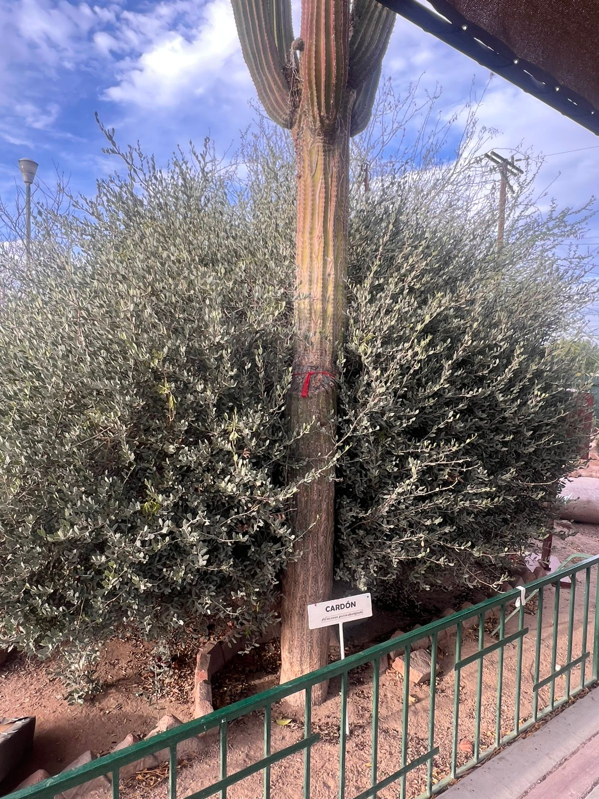
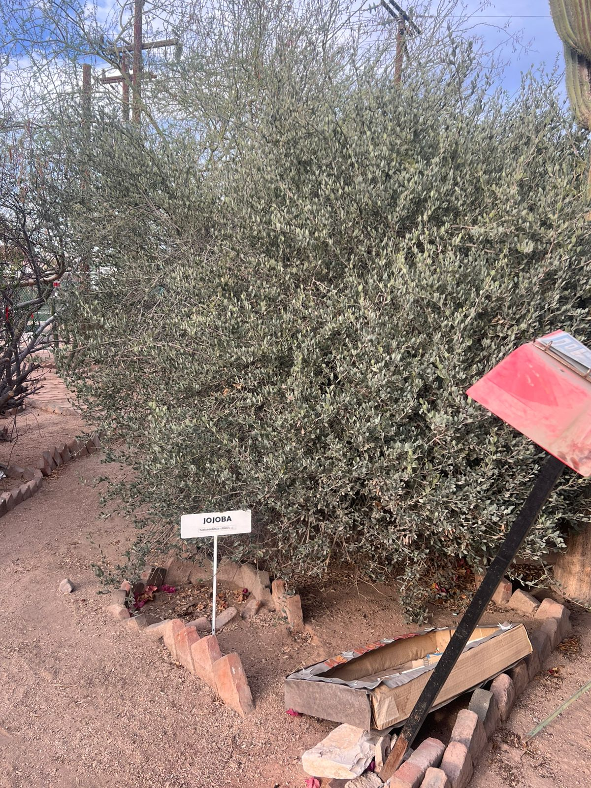
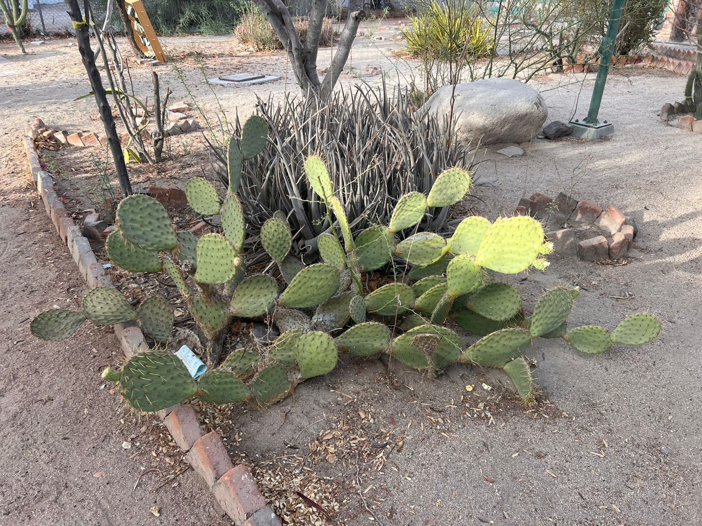
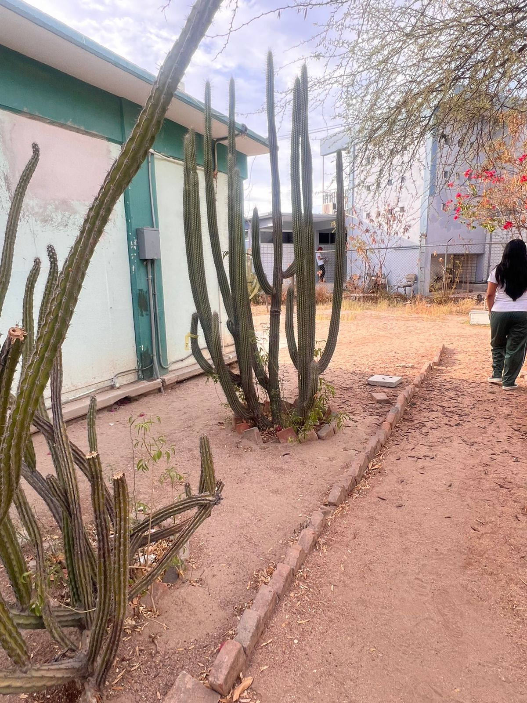
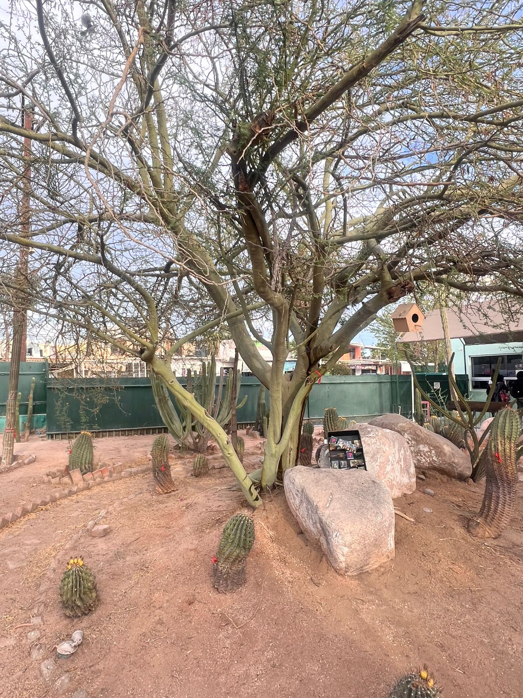

Cardón Gigante
Pachycereus pringlei
El Cardón es el cactus más alto del mundo, capaz de alcanzar hasta veinte metros de altura y vivir por cientos de años. Es una especie emblemática de las zonas áridas de México. Su imponente estructura columnar almacena toneladas de agua en su interior carnoso protegido por costillas, lo que le permite sobrevivir a sequías extremas. Sirve como un ecosistema vivo, dando refugio y alimento a diversas aves y polinizadores nocturnos como los murciélagos.

Jojoba
Simmondsia chinensis
La Jojoba es un arbusto silvestre sumamente resistente a las condiciones extremas del desierto. Sus hojas de color verde azulado tienen una textura cerosa que reduce la pérdida de humedad por evaporación. Es mundialmente conocida debido a que de sus semillas se extrae una cera líquida, mal llamada aceite, que posee propiedades excepcionales para la industria cosmética y farmacéutica, siendo un excelente hidratante natural que no obstruye los poros.

Copal Blanco
Bursera copallifera
El Copal Blanco es un árbol místico de corteza clara y ramas extendidas que entra en un estado de reposo perdiendo sus hojas en la temporada seca para conservar energía. Es una planta sumamente valorada desde la época prehispánica debido a su resina aromática. Al ser extraída y quemada, esta resina produce un humo blanco y fragante que ha sido utilizado tradicionalmente en rituales espirituales, purificaciones y como remedio medicinal casero.

Nopal / Opuntia
Opuntia ficus-indica
El Nopal es uno de los cactus más versátiles y culturalmente importantes. Se caracteriza por sus tallos planos y ovoides llamados pencas, cubiertos de espinas que lo protegen de los depredadores. Esta planta produce deliciosos frutos comestibles conocidos como tunas. Además de su alto valor nutricional y gastronómico en la cocina tradicional, el nopal es utilizado en la medicina alternativa para regular los niveles de azúcar en la sangre y fibra digestiva.

Cactus Órgano / Pitayo
Stenocereus thurberi
Llamado comúnmente Órgano debido a que sus múltiples brazos crecen verticalmente desde una base común, asemejando los tubos de un órgano musical de iglesia. Esta cactácea columnar crece a un ritmo lento y genera hermosas flores que abren exclusivamente por la noche. Sus frutos, conocidos como pitayas dulces, han sido una fuente vital de alimento veraniego para las comunidades indígenas locales durante milenios.

Biznaga de Compás
Ferocactus wislizeni
Las biznagas son cactáceas globulares o cilíndricas de baja altura que crecen en el suelo del desierto. Están densamente armadas con espinas fuertes y ganchudas que actúan como escudo contra el sol y los animales. Son famosas por su capacidad de inclinarse lentamente hacia el sur a lo largo de su vida, sirviendo como una brújula natural para los viajeros perdidos. Actualmente se encuentran protegidas debido a la explotación y pérdida de hábitat.